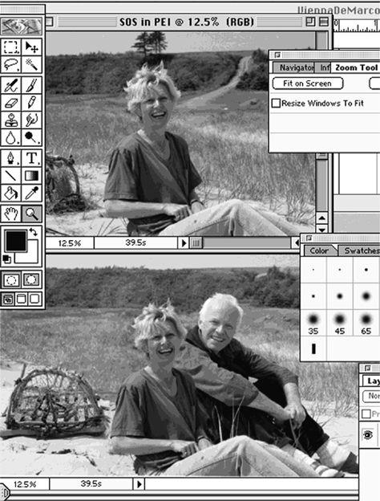

The Best Product Ever Made Is …
First of all, let’s all admit that quality is a good thing. You know this if your Toyota has given you 160,000 miles of trouble-free transportation, or if you’ve got three generations of Macs in a closet that you can’t throw away because the amazing things still run fine. You know this if you’ve ever used a product that was so beautifully made that it gave you a chill of pleasure just to hold it in your hand.
A good definition of quality might be handy here, but—definitions being (by definition) rather abstract—I propose instead to give you an example. The example I’ve chosen comes from my experience as a user of computer software products. We know that the software industry turns out some fine products and some lemons. We might assume that among all the good software products, one is the best. But which one is it? No one to my knowledge has ever even come up with a nomination. That’s a shame, because the best piece of software ever written could be a fine model for anyone who sets out to build something better still. Before I give my own nomination for best, I need to mention that (1) I do not hold stock in the company that made this product, or any company that profits from the sale of it, and (2) I have never consulted for the maker or any of its allied organizations. In what follows, you may quibble with my choice of best, but I hope you will find value in my rationale.
The best software product ever made is … Adobe Photoshop. In case you don’t know it, Photoshop is a facility for operating upon digital images. It allows you to change exposure, brightness and contrast, color balances and saturations. You can shift hue, refocus, crop, sharpen, blur, highlight, remove red-eye, adjust gray levels, color-separate, print and package any digital image or portion thereof. You can merge images, superimpose, add shadows, overprint, collage, solarize, negativize, filter, and generally alter images with such precision and exactness that the whole concept of a photo as legal evidence is forever after thrown into question.
Just imagine that you and someone very dear to you have just spent a lovely day on a deserted beach. To preserve the moment, you’ve taken a number of photos of each other, shooting carefully for easy, relaxed expressions and placement to make best use of the surroundings. Let’s say the photos come out as well as you could ever have hoped: You’ve each caught one great photo of the other. Of course, since you were alone, there is no shot of the two of you together. What a shame.
But wait, maybe Photoshop can come to the rescue. All you have to do is digitize the two photos and then extract one person’s image to merge into the other photo:

In the image shown above, I have inserted myself behind my then fiancée, to produce a composite of the pair of us on the beach on Prince Edward Island. Since we were married in Charlottetown later that day, the picture has come to be our wedding photo. We treasure it every bit as much as if it had been shot directly with the two of us sitting together.
Look what’s happened here: A new product has not just assisted work that used to be done some other way; it has transformed the whole way people think about the possibilities.
My reason for going out so far on a limb as to specifically name an all-time best software product (believe me, those of my clients who are in the software business will not be amused) is to have one concrete example to illustrate the process used in judging anything to be of high quality. I have chosen Photoshop as best for the following reasons:
1. It is unique; when it first appeared, it was utterly unique.
2. It redefines the whole notion of photo processing.
3. It even redefines the way you think about photos. (Don’t throw away that snap that is great of Helen but awful of Murray. Just merge it with another that has a better Murray.)
4. It allows you to do things that were barely imaginable before.
5. It is deeply thought out; in particular, its use of channels is almost infinitely extensible and usable in ever-increasing numbers of ways.
6. It is fully implemented; for example, its “undo” feature can undo even the most complex action.
7. Its human interface sticks in the mind—you almost never need to use the manual.
8. It is revolutionary in the way it affords an interface for third-party add-on providers.
9. It is solid as a rock.
I’ve given you the first nine reasons for my choice, more or less in order of importance. Note that of the nine, only the very last one has anything to do with absence of defect. That’s my point. Product quality has almost nothing to do with defects or their lack. Oh sure, a basically good product may be marred by defects (think of your Internet browser, whichever one you use). But real quality is far more a matter of what it does for you and how it changes you than whether it is perfectly free of flaws. So that browser, even though it crashes maddeningly often, should be considered a quality product. That’s why you use it so much. Its quality is most of all a function of its usefulness.